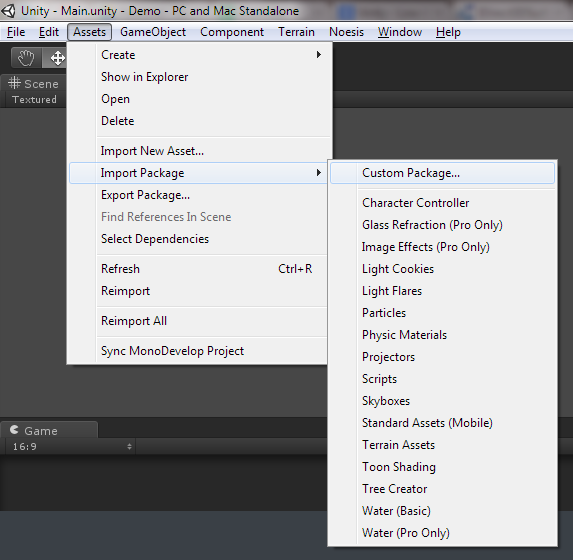
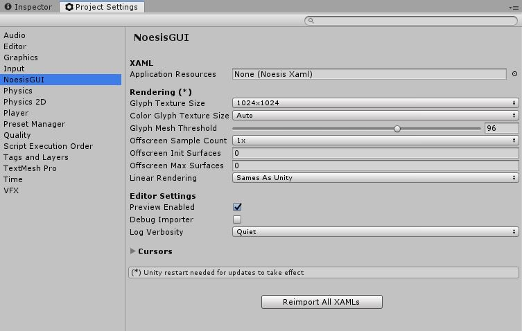
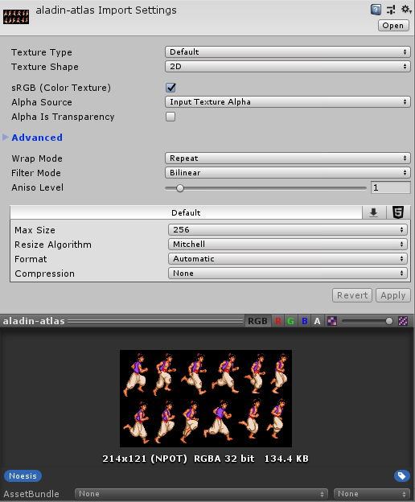
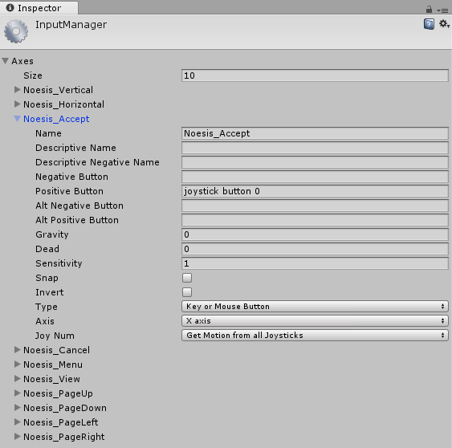
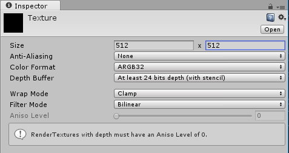
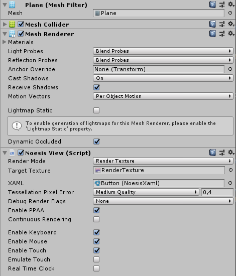
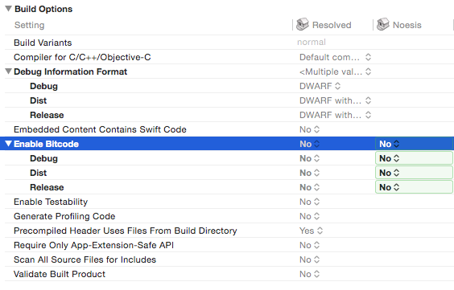

First steps with NoesisGUI and Unity
First steps with NoesisGUI and Unity
First contact with the integration of NoesisGUI within Unity is described in this tutorial. It is recommended that you read the rest of tutorials to familiarize yourself with the basic concepts of XAML and Noesis architecture.
Installation
NOTE
Although not strictly necessary we recommend removing the folder /Assets/NoesisGUI before installing a new version of NoesisGUI.
The first thing is installing the provided NoesisGUI-X.X.X.XXXX.unitypackage into your Unity project. You can do this by clicking on the Unity menu option:
Assets -> Import Package -> Custom Package...
and selecting the file NoesisGUI-X.X.X.XXXX.unitypackage that you have downloaded from our web page. A faster alternative is just dragging the unitypackage into the project window.
Once the installation finishes a welcome window should appear giving you information about the new installed version of NoesisGUI.
NOTE
Due to a restriction in Unity regarding native plugins you may get a warning requesting a restart of Unity.
Configuring NoesisGUI
Clicking on Unity menu option Tools -> NoesisGUI -> Settings will open an inspector window that displays global options for NoesisGUI. If you want more detail about a specific option just hover the mouse over it to get a useful tooltip description.
XAML assets
When you drag and drop a XAML file into Unity Asset folder it will automatically create a NoesisXaml asset. If the asset already exists it will update it. As Unity does not currently support importing custom file extensions you will end up having two files inside your project, the .xaml and the .asset. The .xaml file is the one you edit externally and the .asset if the resource that Unity understands. If you don't need to edit the .xaml you can remove it from your project because it is not necessary for the runtime. Although this is not strictly needed because .xaml files are not included in the final build produced by Unity.
NOTE
We recommend placing the Blend project (.csproj) next to your /Assets folder and edit .xamls directly from there. Each time you make changes, Unity will update corresponding resources.
NoesisXaml resources provide useful thumbnails and previews you can use to distinguish from the original .xaml in your project.
Texture assets
Images used inside XAML generate a dependency to the corresponding Unity texture asset. The asset imported by Unity is directly used by Noesis. This means that all settings used under Import Settings are taken into account. Premultiplied alpha is needed in all images used by NoesisGUI. Make sure to set the Alpha Source to Input Texture Alpha and uncheck Alpha is Transparency.
NOTE
More information about premultplied alpha at our forums.
Game Pad
NoesisGUI understands the following Input Manager axes and game actions:
- Noesis_Horizontal: Joystic Axis
- Noesis_Vertical: Joystick Axis
- Noesis_Select: Key
- Noesis_Back: Key
- Mouse ScrollWheel: Mouse Movement
Make sure to properly configure Unity Input Manager to map gamepad inputs to the UI.
Rendering
The MonoBehaviour in charge of rendering XAMLs is NoesisView. You need to attach that component to your GameObject. If you attach to a Camera object then the user interface will be rendered as a layer on top of the camera.
You can easily setup a user interface rendering to camera by doing drag and drop of a XAML asset into the Scene View. You can also drag and drop XAMLs into the Hierarchy Window.

To display and interacts with the user interface you must enter Play mode.

NOTE
By default camera post processing effects will affect the GUI. In case you don't want this to happen. You need to create a new camera to render NoesisGUI. This camera must have a larger Depth value and must set Clear Flags to Don't Clear. You must also make sure the Culling Mask is set to None to avoid rendering 3D elements in this camera.
Sometimes you don't want the user interface to be directly rendered to the screen or camera. NoesisGUI supports rendering XAML to textures that are mapped to the mesh of an object. For that purpose you must create a Render Texture asset.
Note
For masking, NoesisGUI needs an active stencil buffer. This can be activated in Unity by selecting a 24-bits Depth Buffer.
This texture must be used by one of the materials of the Mesh, a Plane in this example.
And finally, the NoesisView component must be attached to the object. Once this have been done, the XAML will be rendered onto the texture the next time you hit Play.

If you want to interact with the GUI rendered in the texture, your GameObject must have a MeshCollider component so texture coordinates can be obtained when doing the hit testing projection.
Loading XAML by code
Similar to standard Unity assets, if you want to load XAML by code you need to have a reference to the corresponding NoesisXaml asset in a MonoBehaviour component or just store it in a Resources/ folder and load it by using Resources.Load().
NoesisXaml xaml = (NoesisXaml)UnityEngine.Resources.Load(path, typeof(NoesisXaml));
Button button = (Button)xaml.Load();
Problem with this approach is that it is not compatible with WPF. In case you are interested in having code that is compatible with both Unity and WPF we provide a way to preload XAMLs by adding them to a list available in the Settings panel.

Preloaded XAMLs can be loaded using string paths, for example.
Button button = (Button)Noesis.GUI.LoadXaml("Assets/UI/Button.xaml");
Note
Even if you move the .asset you must always use the original path that was used when the XAML was imported
Hit Testing
In some situations it is necessary to check if mouse is over or was clicked over any element of the UI. This can be done with the HitTest method available through the VisualTreeHelper class.
Here is an example where a Collider mouse event was received and we want to find out if we should discard it because any UI element could have been clicked before:
using UnityEngine;
using Noesis;
public class HitTestSample : MonoBehaviour
{
Visual _root;
void Start()
{
var gui = GetComponent<NoesisView>();
_root = (Visual)gui.Content;
}
void OnMouseDown()
{
UnityEngine.Vector3 mousePos = Input.mousePosition;
Point point = new Point(mousePos.x, Screen.height - mousePos.y);
HitTestResult hit = VisualTreeHelper.HitTest(this._root, point);
if (hit.VisualHit == null)
{
// No UI element was hit
// ...your code here
}
}
}
Software Keyboard
When using a mobile/touch platform a software keyboard is used to generate the input keys that are sent to the application. NoesisGUI uses the TouchScreenKeyboard provided by Unity to open the software keyboard whenever a TextBox or PasswordBox gets the application focus. The default software keyboard manager is exposed by the class UnitySoftwareKeyboard:
public class UnitySoftwareKeyboard: SoftwareKeyboard
{
/// <summary>
/// Override if you want to open the software keyboard for a TextBox with your own options.
/// </summary>
protected virtual UnityEngine.TouchScreenKeyboard ShowOnTextBox(TextBox textBox);
/// <summary>
/// Override if you want to open the software keyboard for a PasswordBox with your own options.
/// </summary>
protected virtual UnityEngine.TouchScreenKeyboard ShowOnPasswordBox(PasswordBox passwordBox);
}
The default behavior can be overridden by inheriting from UnitySoftwareKeyboard:
public class AppKeyboardManager : Noesis.UnitySoftwareKeyboard
{
protected override TouchScreenKeyboard ShowOnTextBox(Noesis.TextBox textBox)
{
if (textBox.GetName() == "emailField")
{
return TouchScreenKeyboard.Open(textBox.GetText(), TouchScreenKeyboardType.EmailAddress);
}
else
{
return base.ShowOnTextBox(textBox);
}
}
}
public class AppLogic : MonoBehaviour
{
// Use this for initialization
void Start ()
{
Noesis.GUI.SoftwareKeyboard = new AppKeyboardManager();
}
}
Building on iOS
For now, Bitcode is not supported. It must be disabled in the project settings.
Building on Android
The process of building for Android is very simple, only a few settings should be taken into account. The steps to follow are:
- Select File -> Build Settings...
- Select the Scenes to be deployed
- Select platform Android
- Adjust the desired Player Settings (Resolution, Icons, Splash Image...). Make sure that Minimum API Level is at least Android 2.3.3 'Gingerbread'. NoesisGUI is not compatible with previous Android versions.
- Click the Build button
- Select the location where you want to save the .apk file
- Install the .apk into your Android device and Run it
You can also generate an Eclipse project to extend your application. In that case the steps are the following:
- Select File -> Build Settings...
- Select the Scenes to be deployed
- Select platform Android
- Adjust the desired Player Settings (Resolution, Icons, Splash Image...). Make sure that Minimum API Level is at least Android 2.3.3 'Gingerbread'. NoesisGUI is not compatible with previous Android versions.
- Click the Export button
- Select the location where you want to store the Eclipse project
- Optimize deployed data
- Build project with Eclipse to generate the .apk file
- Install the .apk into your Android device and Run it
Note
If your application needs to use .OBB extension files you should probably have checked the option Split Application Binary. Then it is convinient to set Player Settings option Write Access to External (SDCard). We found several clients having problems running the application just after being installed, because Unity can't access the extension file and XAML resources won't be found.
Building on Universal Windows Platform
Only Universal Windows Platform for Windows 10 is supported.
- Make sure the SDK is set to "Universal 10".

- Press "Build" button.
- Open the generated Visual Studio project.
- Build the solution for the desired platform, ARM, x86 or x86_64.
- Deploy and Execute.